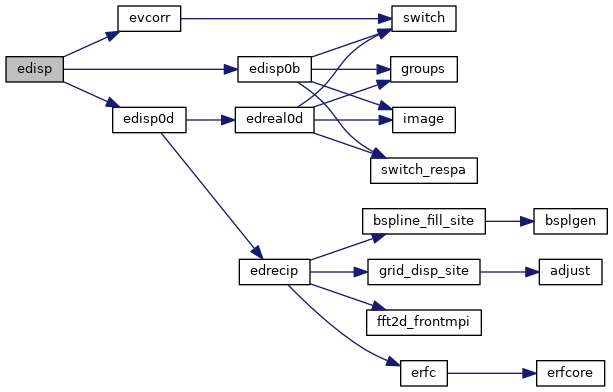
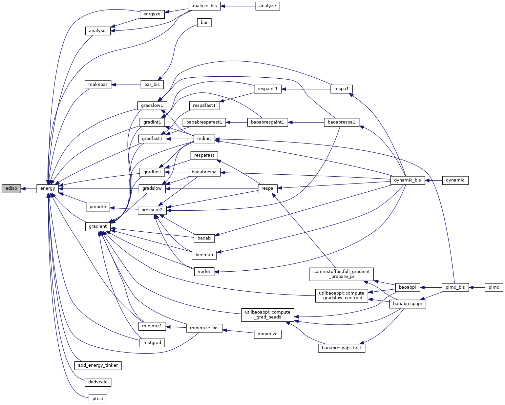
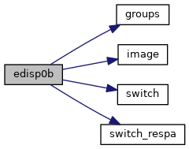
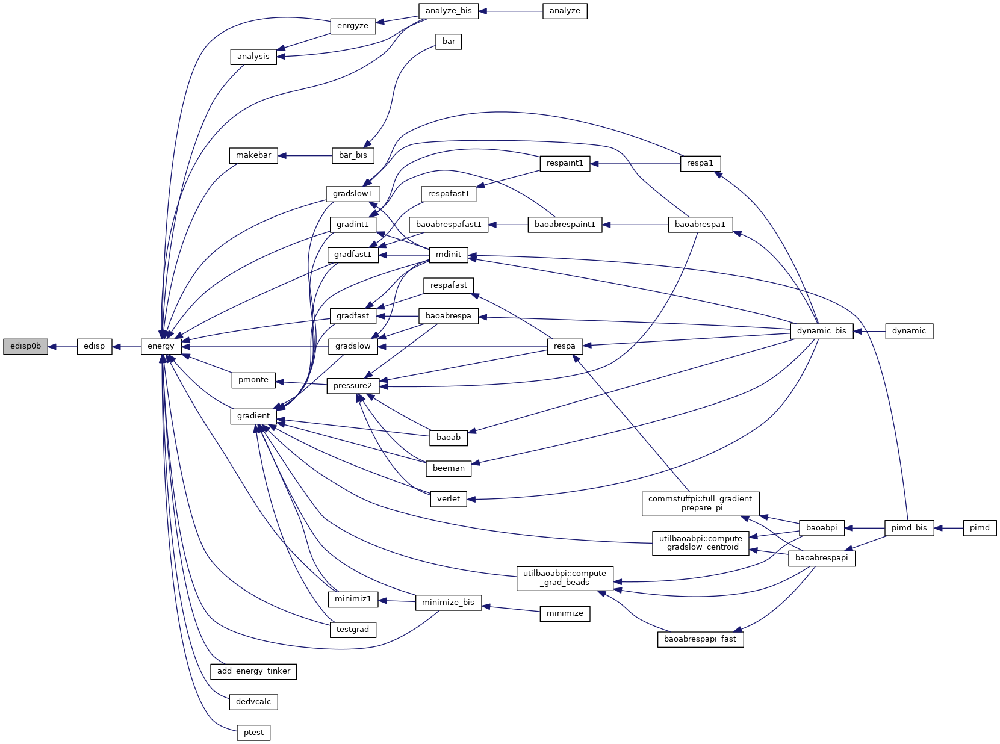
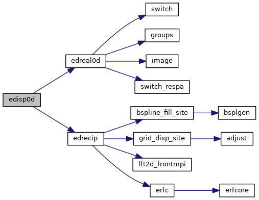
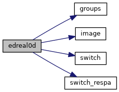
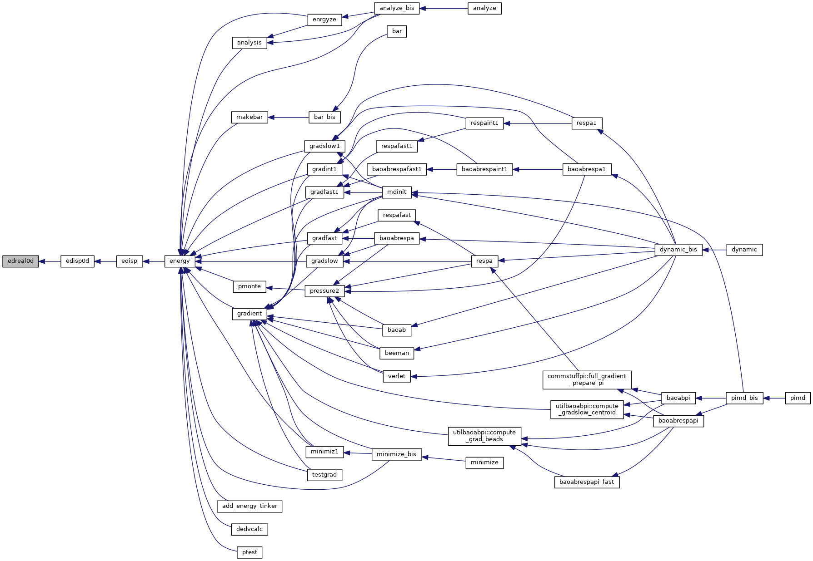
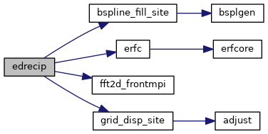
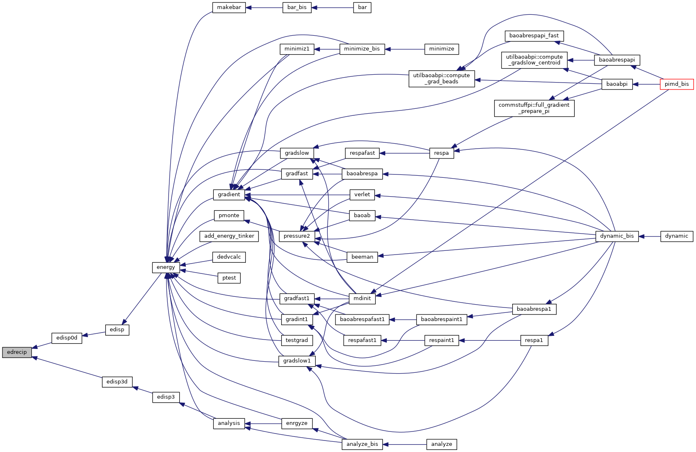

|
Tinker-HP v1.3
|
|
Tinker-HP v1.3
|
Go to the source code of this file.
Functions/Subroutines | |
| subroutine | edisp |
| "edisp" calculates the dispersion energy; also partitions the energy among the atoms More... | |
| subroutine | edisp0b |
| calculates the damped dispersion potential energy using a pairwise neighbor list More... | |
| subroutine | edisp0d |
| calculates the dispersion interaction energy using particle mesh Ewald summation and a double loop More... | |
| subroutine | edrecip |
| evaluates the reciprocal space portion of the particle mesh Ewald energy due to damped dispersion More... | |
| subroutine | edreal0d |
| "edreal0d" evaluated the real space portion of the damped dispersion energy using Ewald and a neighbor list More... | |
| subroutine edisp | ( | ) |
"edisp" calculates the dispersion energy; also partitions the energy among the atoms
| no | params |
Definition at line 27 of file edisp.f90.
References edisp0b(), edisp0d(), and evcorr().
Referenced by energy().


| subroutine edisp0b | ( | ) |
calculates the damped dispersion potential energy using a pairwise neighbor list
| no | params |
Definition at line 89 of file edisp.f90.
References groups(), image(), switch(), and switch_respa().
Referenced by edisp().


| subroutine edisp0d | ( | ) |
calculates the dispersion interaction energy using particle mesh Ewald summation and a double loop
| no | params |
Definition at line 395 of file edisp.f90.
References edreal0d(), and edrecip().
Referenced by edisp().

| subroutine edreal0d | ( | ) |
"edreal0d" evaluated the real space portion of the damped dispersion energy using Ewald and a neighbor list
| no | params |
Definition at line 673 of file edisp.f90.
References groups(), image(), switch(), and switch_respa().
Referenced by edisp0d().


| subroutine edrecip | ( | ) |
evaluates the reciprocal space portion of the particle mesh Ewald energy due to damped dispersion
| no | params |
Definition at line 470 of file edisp.f90.
References bspline_fill_site(), erfc(), fft2d_frontmpi(), and grid_disp_site().
Referenced by edisp0d(), and edisp3d().


 1.8.5
1.8.5